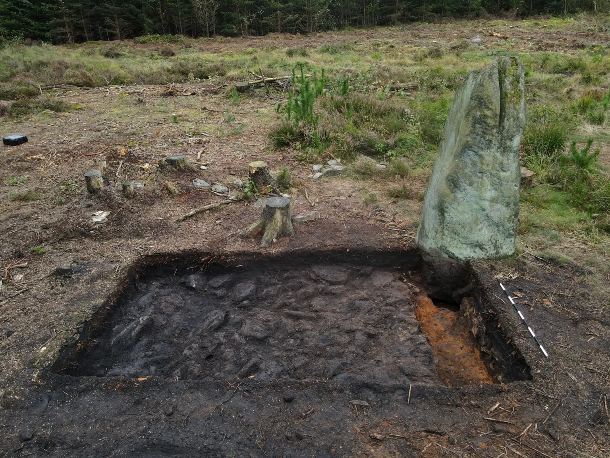

Bronze Age Stone Circle Uncovered
A New Discovery
Archaeologists have discovered that what was thought to be a single standing stone in a forest is actually part of a larger ceremonial site dating back 3,700 years to the Bronze Age.
The discovery was made in Farley Wood, near Matlock in Derbyshire, following excavations by Forestry England in partnership with the archaeology team from the TV series Time Team.
Local archaeology enthusiast George Bird had suspected for some time that the stone might be part of a larger monument. His insights led to the investigation and subsequent discovery of several other stones forming a circle.
Forestry England stated they would now treat the site with the same protections as a scheduled monument to preserve its historical significance for future generations.